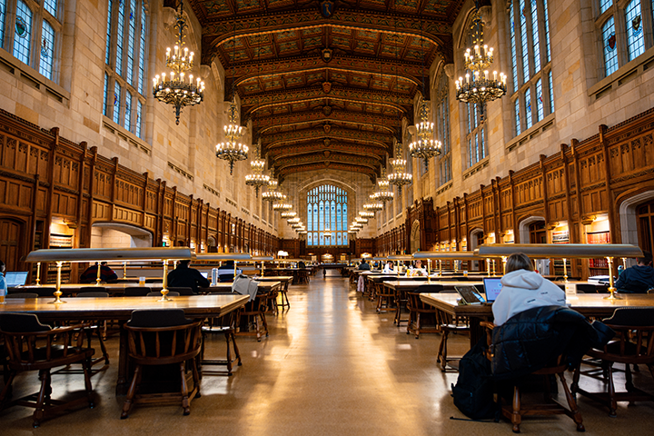

Study Spaces
Central Campus Study Spaces
Michigan Union:
- Almosphere: Very social. It's great for group studying
- Features: comfortable seating, food options, meeting rooms
- Address: 530 S State St, Ann Arbor, MI 48109
- Atmosphere: Mix of quiet and social space
- Features: Collaborative study rooms, computer stations, printers, books
- Address: 919 S University Ave, Ann Arbor, MI 48109
- Atmosphere: mostly quiet and best for individual studying
- Features: Quiet reading rooms, reservable study spaces, and book collections
- Address: 913 S University Ave, Ann Arbor, MI 48109
- Atmosphere: Extremely quiet and formal
- Features: Gothic architecture, large study tables
- Address: Legal Research Building, 801 Monroe St, Ann Arbor, MI 48109
North Campus Study Spaces

Duderstadt Center (The Dude):
- Almosphere: Mix of collaborative and quiet areas
- Features: High-tech resources, computer labs, creative spaces
- Address: 2281 Bonisteel Blvd, Ann Arbor, MI 48109
- Atmosphere: Social and lively, great for casual studying or group projects
- Features: Food options, cozy seating
- Address: 2101 Bonisteel Blvd, Ann Arbor, MI 48109
- Atmosphere: Quiet and creative
- Features: Bright spaces, design-focused, large worktables
- Address: 2000 Bonisteel Blvd, Ann Arbor, MI 48109